종말 네트워크 연동 대기
별도 Web Service 공개 주소를 연결하면 강화 성공과 공지가 이곳에 자동 표시됩니다.
알바·땅파기·코인·채집·낚시·벌목·광산 도중 버튼형 랜덤 인카운트가 발생합니다. 선택에 따라 보상과 위험이 갈리고, 장비·강화·유물·제작·기지·펫·카지노에는 269장의 오리지널 아포칼립스 이미지 풀이 무작위로 표시됩니다.
반복 생활 콘텐츠를 버튼형 선택 인카운트와 다중 이미지 풀로 확장하고, 장비·기지·펫 성장의 변화를 장면으로 기록합니다.
별도 실시간 피드 Web Service를 15초마다 확인합니다. 운영·보안·문의 내용은 공개하지 않고, 봇 상태와 강화 이정표·운영진 공개 공지만 표시합니다.
별도 Web Service 공개 주소를 연결하면 강화 성공과 공지가 이곳에 자동 표시됩니다.
단순 체력 차이가 아니라 약점, 패턴, 부위 파괴, 75·50·25% 페이즈와 전용 재료가 보스마다 다릅니다.
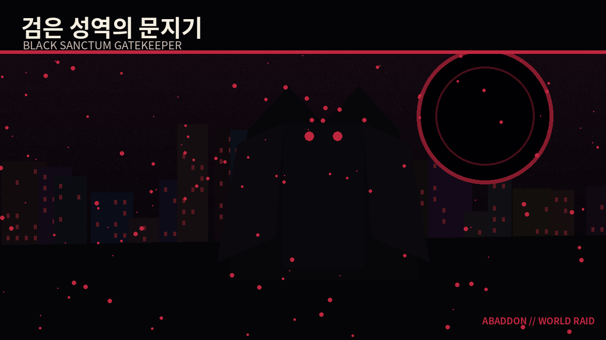
흑철 방벽 · 봉인 사슬 · 강화 무기 약점
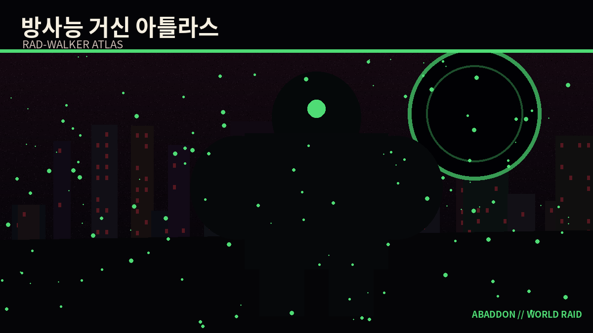
방사능 노심 · 장갑 부위 파괴 · 방호 장비 약점
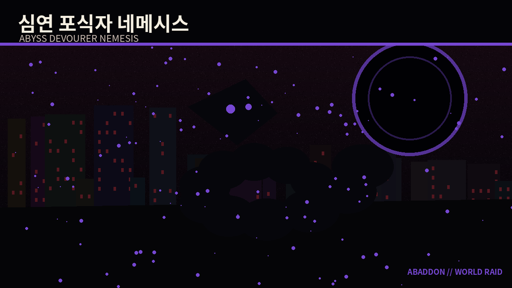
생명 흡수 · 촉수 파괴 · 화염·치명타 약점
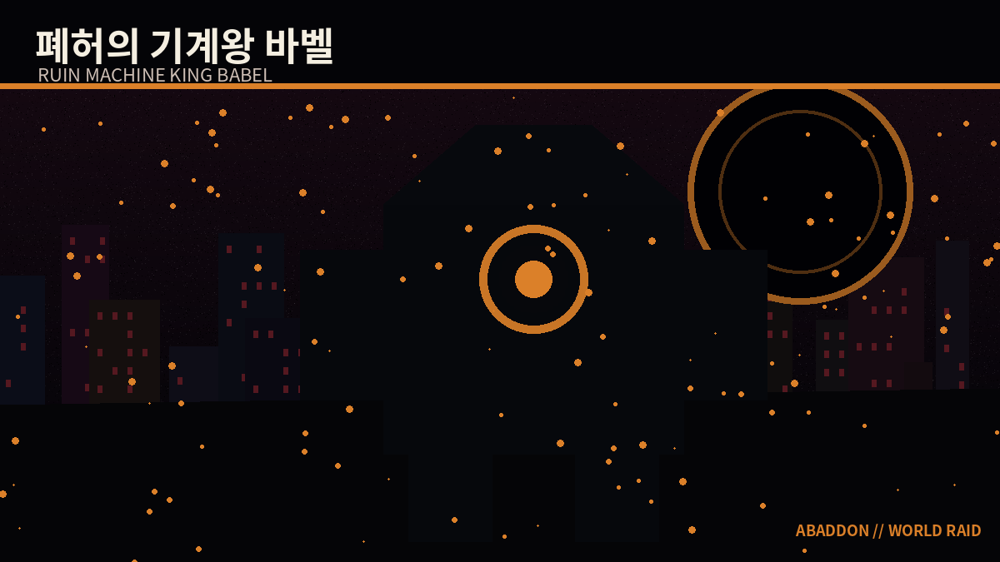
자가 수복 장갑 · 연산핵 · 고철·광석 연계
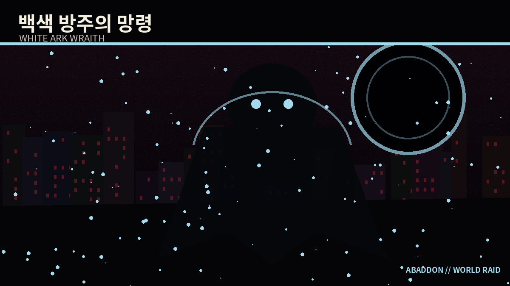
환영 분신 · 기억 닻 · 시즌 2·원정 유물 연계
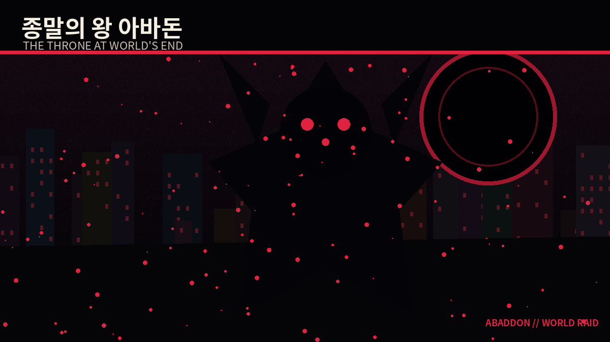
왕좌의 심판 · 3개 부위 · 서버 역할 다양성 약점
!월드보스!월드보스공격!월드보스기여도!월드보스보상한 결과에 한 장을 고정하지 않습니다. 활동·성공·실패·희귀도·성장 단계별 이미지 풀에서 매번 다른 장면을 골라 Discord 임베드에 표시합니다.
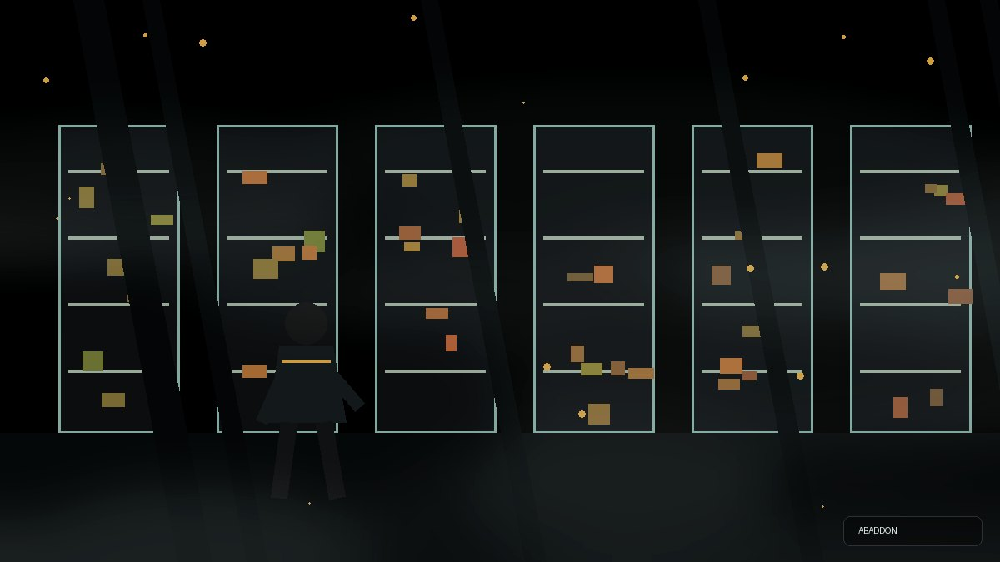
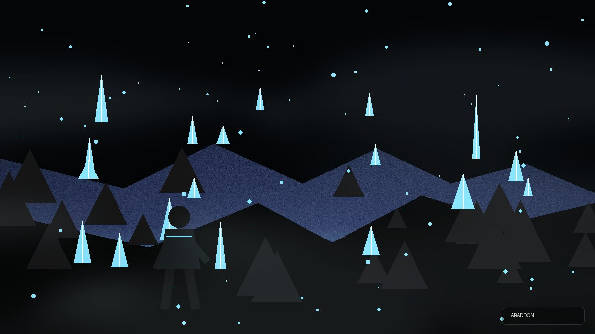
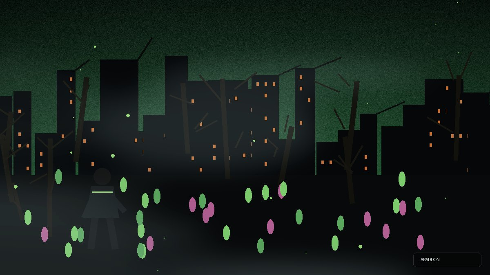
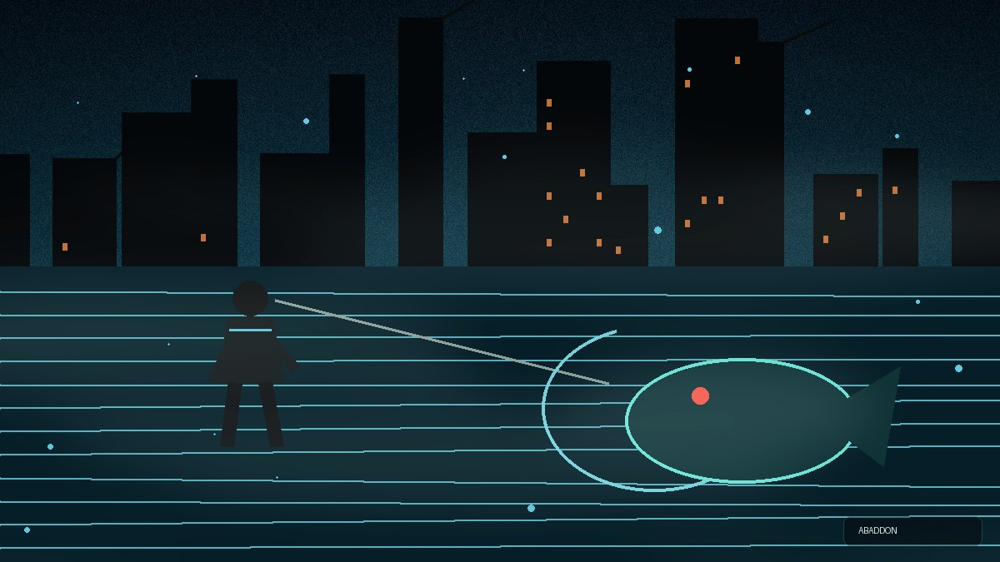
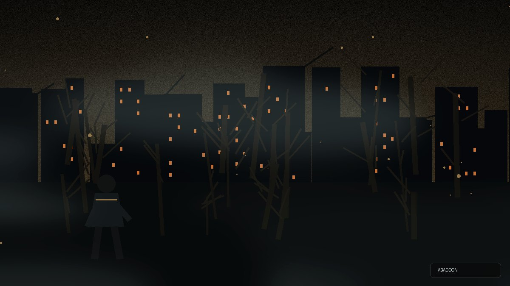
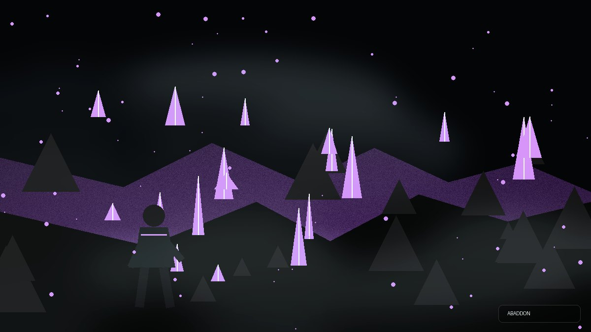
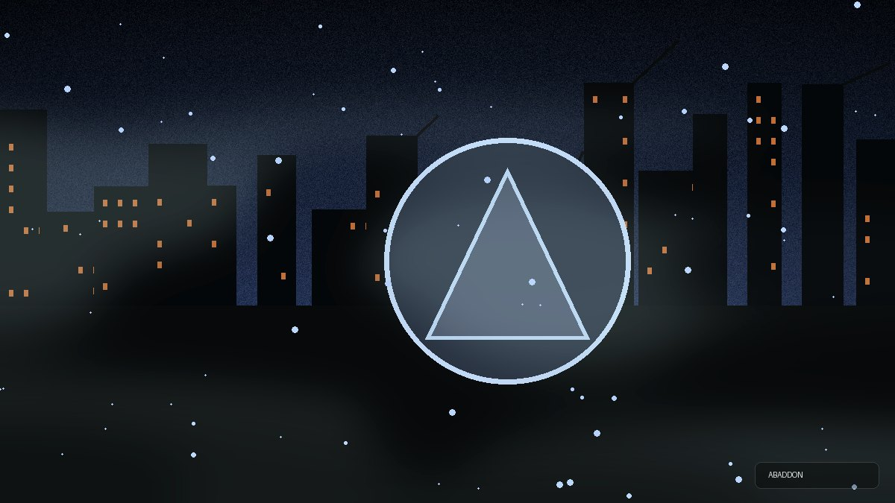
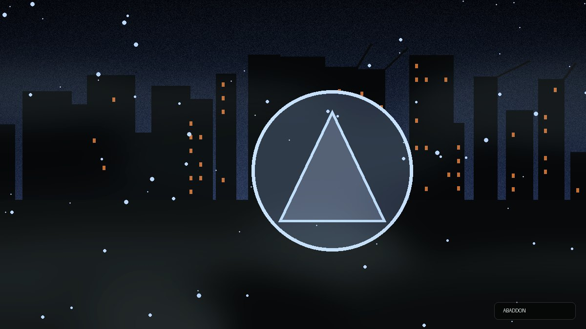
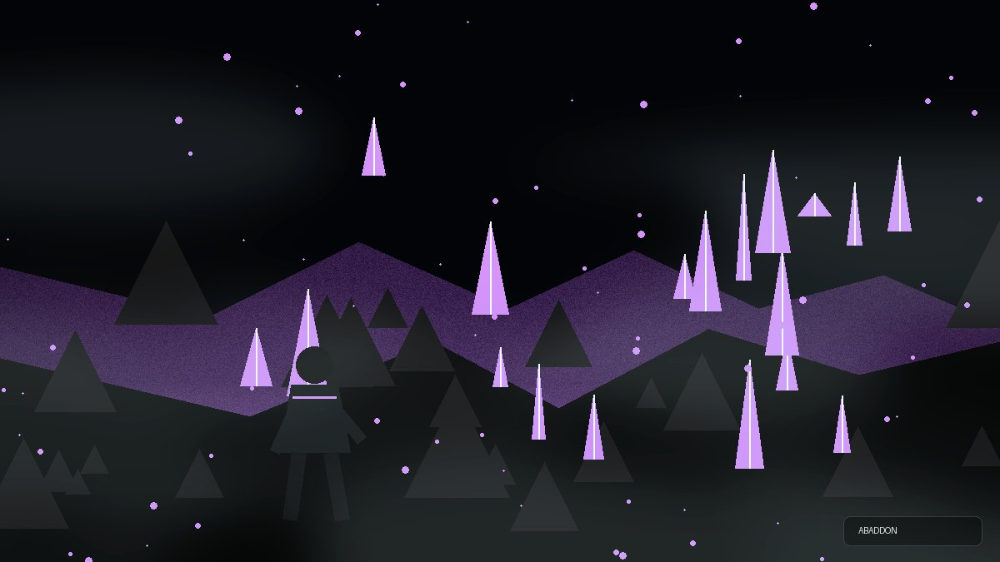
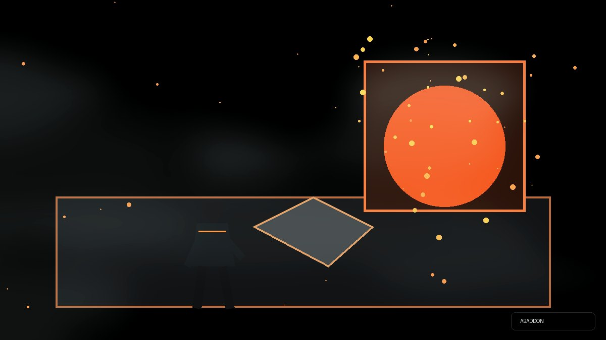
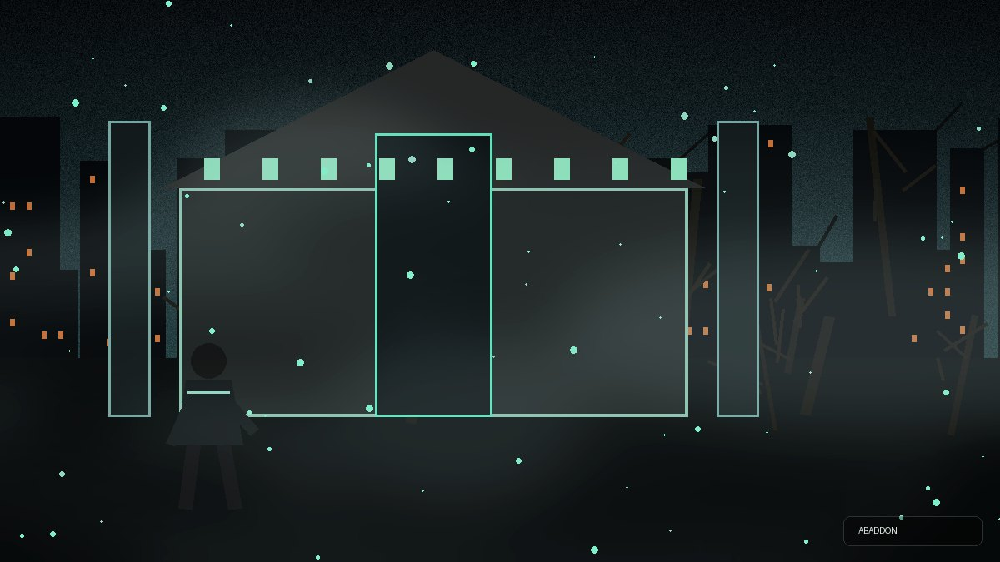
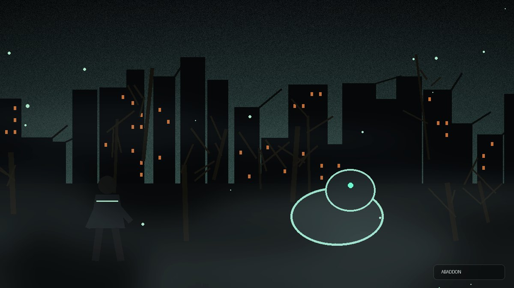
!인카운트도감!알바!땅파기!채집!낚시!벌목!광산구성원이 남긴 안전한 지식은 운영진 검수를 거쳐 아바돈의 새로운 대화 기록이 됩니다.
알바·굴착·코인·채집·낚시·벌목·광산에서 일반·희귀·위험 조우가 발생합니다. 150초 안에 세 선택지 중 하나를 골라 보상·손실·자원·고대파편 결과를 결정합니다.
말 걸기를 선택하면 모달 대신 현재 채널에 연속 대화가 열립니다. 이후 평소처럼 채팅하거나 아바돈 답변에 답글을 달아 대화를 이어갑니다.
구성원은 모달로 질문과 답변을 제출하고 운영진은 최대 25개씩 승인·반려합니다. 운영진 등록은 즉시 승인되며 개인정보·토큰·초대 링크는 차단합니다.
매일 바뀌는 서버 질문, 생존 밸런스 투표, 응원과 한마디를 제공하며 대화·승인 기억·질문 참여로 사용자별 교감 기록을 쌓습니다.
채널 이름과 주제를 보고 25종 규칙 중 하나를 추천합니다. 여러 채널을 선택하면 채널마다 20초 간격으로 작성·고정하고, 기존 메시지는 중복 없이 갱신합니다.
고철·광석·식량·고대파편·미감정 보물과 굴착 잔돈을 항목별 임베드에 표시합니다. 진행률 연출 뒤 현재 보유량과 남은 횟수까지 한눈에 확인합니다.
돈주세요는 정상 지원·빈 상자·사기 상인으로 갈리고, 알바는 작업 배정·진행·성공·사고 결과를 보여줍니다. 손실은 현재 잔액을 넘지 않습니다.
검은 주파수와 백색 방주의 선택을 계승하는 시즌 3 캠페인과 4개의 신규 엔딩을 드롭다운으로 진행합니다.
Discord 연결, 데이터 파일, TTS, 서버 리뉴얼, 슬래시 명령, 홈페이지 피드와 봇 권한을 드롭다운으로 점검합니다.
TTS 채널·엔진·기본 목소리, 환영 안내, 운영 로그, 자동 이모지와 공개 피드를 명령 하나에서 관리합니다.
일반 사용자가 자신의 음성을 드롭다운으로 선택하며 다른 사람이나 서버 기본값은 변경하지 않습니다.
음성방에 들어간 상태에서 음성을 시험하고, 개인 설정을 초기화해 서버 기본값으로 돌아갈 수 있습니다.
환영 메시지에 공지사항·서버 기본규칙·가입 채널을 연결하고 `!가입 생존자` 시작법을 안내합니다.
TTS 채팅방의 메시지를 작성자의 음성방에서 읽되, 닉네임은 생략하고 채팅 내용만 낭독합니다. discord.py 2.7용 음성 런타임도 유지합니다.
명령 하나로 테마 미리보기·안전 계획·수동 백업·복구·빈 카테고리 정리를 선택합니다.
봇 상태와 공개 강화·공지 이벤트가 별도 피드 서비스에서 홈페이지로 안전하게 흐릅니다.
음성 성역과 정돈된 서버 메뉴를 공식 Discord에서 직접 확인하세요.